S4 generic for previewing Giotto's image and subcellular objects.
Usage
# S4 method for class 'giottoImage,missing'
plot(x, y, ...)
# S4 method for class 'giottoLargeImage,missing'
plot(
x,
y,
col,
max_intensity,
mar,
asRGB = FALSE,
legend = FALSE,
axes = TRUE,
maxcell = 5e+05,
smooth = TRUE,
...
)
# S4 method for class 'giottoAffineImage,missing'
plot(x, y, ...)
# S4 method for class 'giottoPolygon,missing'
plot(
x,
point_size = 0.6,
type = c("poly", "centroid"),
max_poly = getOption("giotto.plot_max_poly", 1e+06),
...
)
# S4 method for class 'giottoPoints,missing'
plot(x, point_size = 0, feats = NULL, raster = TRUE, raster_size = 600, ...)
# S4 method for class 'spatLocsObj,missing'
plot(x, y, ...)
# S4 method for class 'dimObj,missing'
plot(x, dims = c(1, 2), ...)
# S4 method for class 'spatialNetworkObj,missing'
plot(x, y, ...)
# S4 method for class 'affine2d,missing'
plot(x, y, ...)Arguments
- x
giotto image, giottoPolygon, or giottoPoints object
- y
Not used.
- ...
additional parameters to pass
- col
character. Colors. The default is grDevices::grey.colors(n = 256, start = 0, end = 1, gamma = 1)
- max_intensity
(optional) value to treat as maximum intensity in color scale
- mar
numeric vector of length 4 to set the margins of the plot (to make space for the legend). The default is (3, 5, 1.5, 1)
- asRGB
(optional) logical. Force RGB plotting if not automatically detected
- legend
logical or character. If not FALSE a legend is drawn. The character value can be used to indicate where the legend is to be drawn. For example "topright" or "bottomleft"
- axes
logical. Draw axes?
- maxcell
positive integer. Maximum number of cells to use for the plot
- smooth
logical. If TRUE the cell values are smoothed
- point_size
size of points when plotting giottoPoints
- type
what to plot: either 'poly' (default) or polygon 'centroid'
- max_poly
numeric. If
typeis not specified, maximum number of polygons to plot before automatically switching to centroids plotting. Default is 1e4. This value is settable using options("giotto.plot_max_poly")- feats
specific features to plot within giottoPoints object (defaults to NULL, meaning all available features)
- raster
default = TRUE, whether to plot points as rasterized plot with size based on
raster_sizeparam. See details. WhenFALSE, plots viaterra::plot()- raster_size
Default is 600. Only used when
rasteris TRUE- dims
dimensions to plot
Details
[giottoPoints raster plotting]
Fast plotting of points information by rasterizing the information using
terra::rasterize(). For terra SpatVectors, this is faster than
scattermore plotting. When plotting as a raster, col colors map on
whole image level, as opposed to mapping to individual points, as it does
when raster = FALSE
Allows the following additional params when
plotting with no specific feats input:
force_size logical.
raster_sizeparam caps at 1:1 with the spatial extent, but also with a minimum resulting px dim of 100. To ignore these constraints, setforce_size = FALSEdens logical. Show point density using
countstatistic per rasterized cell. (Default = FALSE). This param affectscolparam is defaults. When TRUE,colisgrDevices::hcl.colors(256). WhenFALSE, "black" and "white" are used.background (optional) background color. Usually not used when a
colcolor mapping is sufficient.
Note that col param and other base::plot() graphical params are available
through ...
Functions
plot(x = giottoImage, y = missing): Plot magick-based giottoImage object. ... param passes to.plot_giottoimage_mgplot(x = giottoLargeImage, y = missing): Plot terra-based giottoLargeImage object. ... param passes to.plot_giottolargeimageplot(x = giottoPolygon, y = missing): Plot terra-based giottoPolygon object. ... param passes toplotplot(x = giottoPoints, y = missing): terra-based giottoPoint object. ... param passes toplotplot(x = spatLocsObj, y = missing): Plot a spatLocsObjplot(x = dimObj, y = missing): Plot a dimObjplot(x = spatialNetworkObj, y = missing): Plot a spatialNetworkObjplot(x = affine2d, y = missing): Plot a affine2d. blue is start, red is end
Examples
######### giottoLargeImage plotting #########
if (FALSE) { # \dontrun{
gimg <- GiottoData::loadSubObjectMini("giottoLargeImage")
gimg <- GiottoClass:::.update_giotto_image(gimg) # only needed if out of date
plot(gimg)
plot(gimg, col = grDevices::hcl.colors(256))
plot(gimg, max_intensity = 100)
} # }
######### giottoPolygon plotting #########
gpoly <- GiottoData::loadSubObjectMini("giottoPolygon")
plot(gpoly)
 plot(gpoly, type = "centroid")
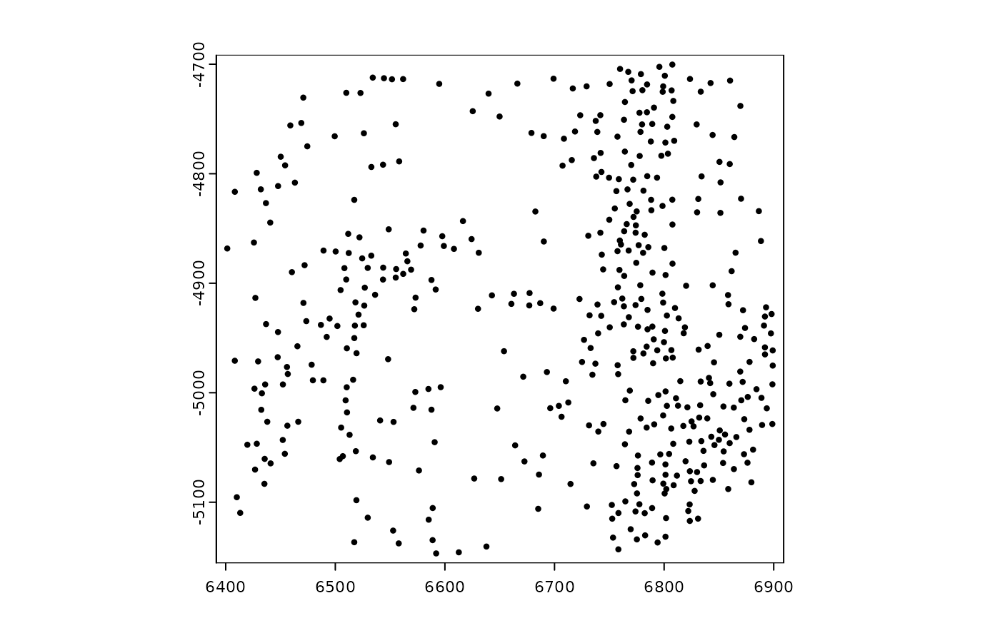
######### giottoPoints plotting #########
gpoints <- GiottoData::loadSubObjectMini("giottoPoints")
# ----- rasterized plotting ----- #
# plot points binary
plot(gpoints)
plot(gpoly, type = "centroid")
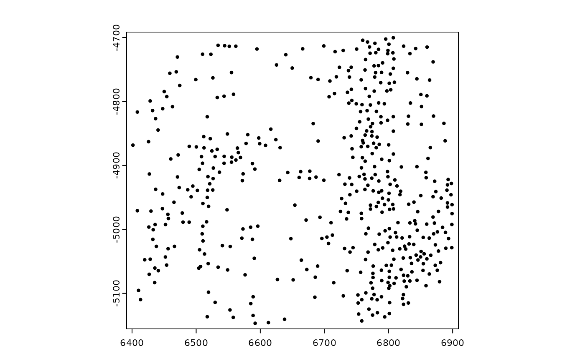
######### giottoPoints plotting #########
gpoints <- GiottoData::loadSubObjectMini("giottoPoints")
# ----- rasterized plotting ----- #
# plot points binary
plot(gpoints)
 # plotting all features maps colors on an image level
plot(gpoints, col = grDevices::hcl.colors(n = 256)) # only 2 colors are used
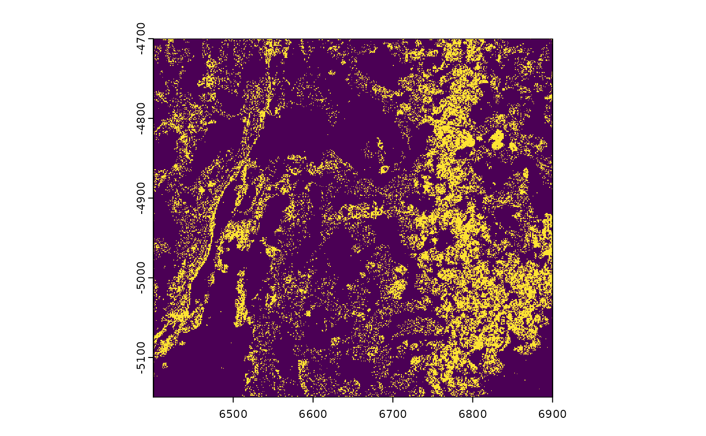
plot(gpoints, col = "green", background = "purple")
# plotting all features maps colors on an image level
plot(gpoints, col = grDevices::hcl.colors(n = 256)) # only 2 colors are used
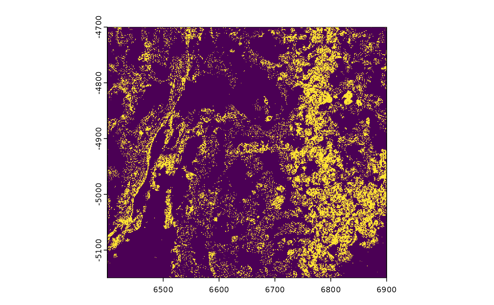
plot(gpoints, col = "green", background = "purple")
 # plot points density (by count)
plot(gpoints, dens = TRUE, raster_size = 300)
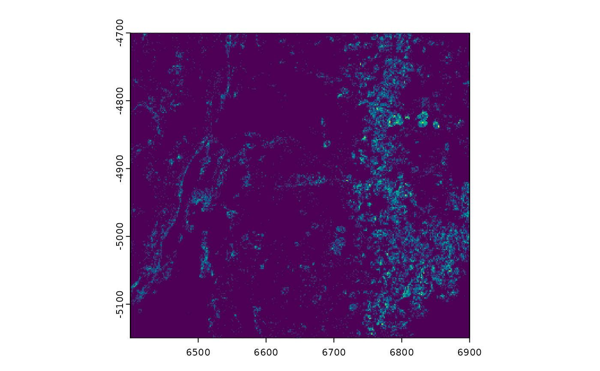
# force_size = TRUE to ignore default constraints on too big or too small
# (see details)
plot(gpoints, dens = TRUE, raster_size = 80, force_size = TRUE)
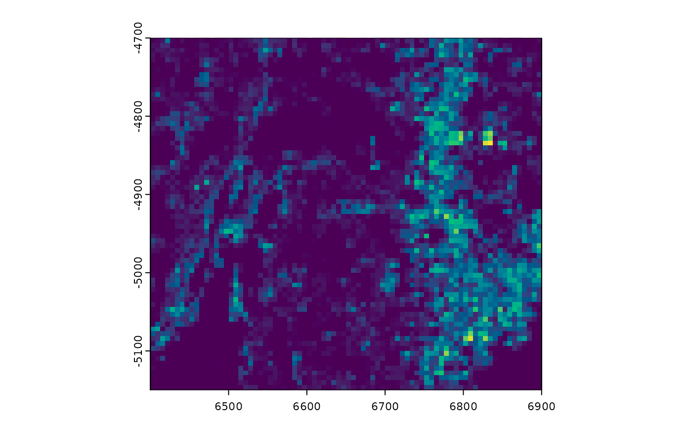
# plot specific feature(s)
plot(gpoints, feats = featIDs(gpoints)[seq_len(4)])
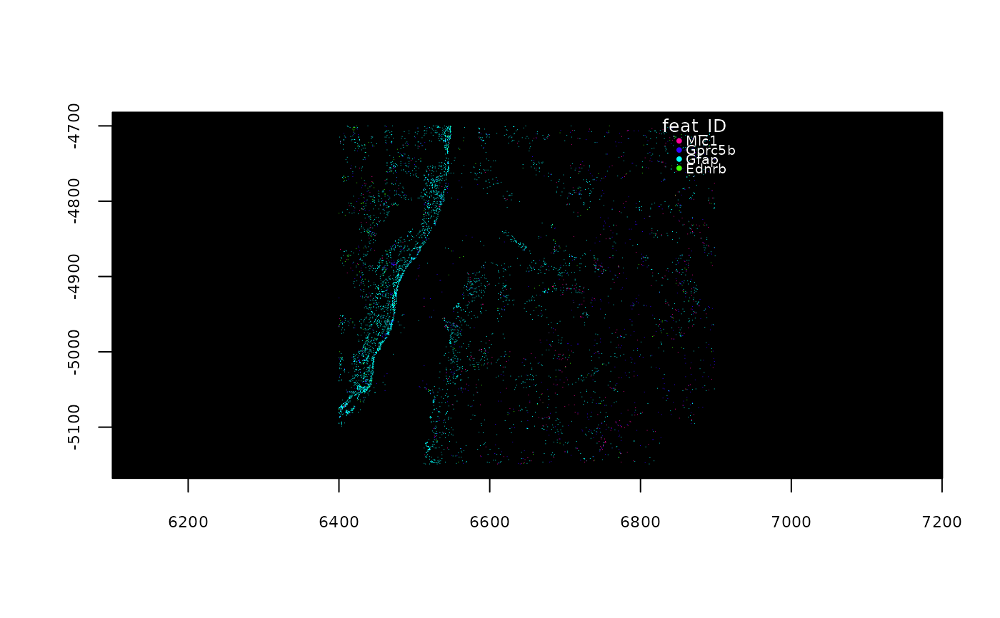
# ----- vector plotting ----- #
# non-rasterized plotting (slower, but higher quality)
plot(gpoints, raster = FALSE)
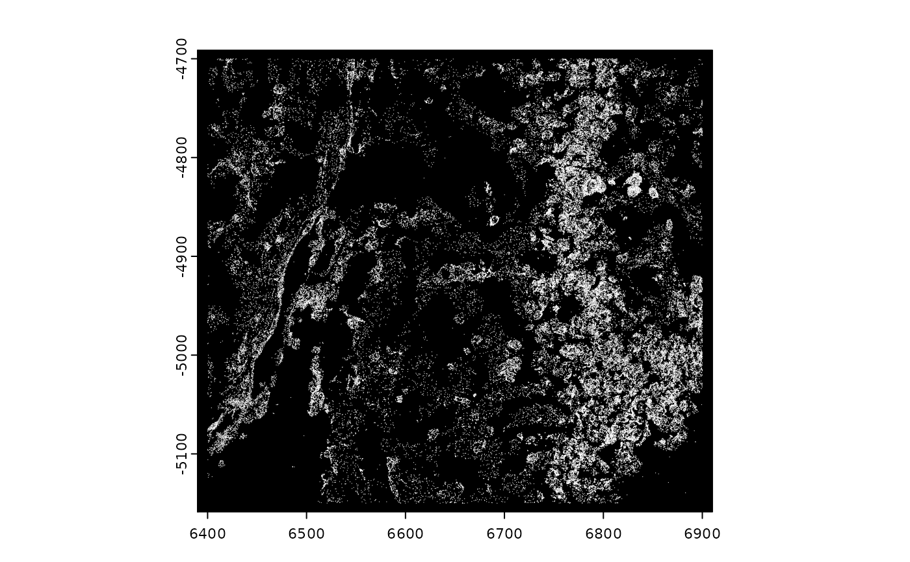
# vector plotting maps colors to transcripts
plot(gpoints, raster = FALSE, col = grDevices::rainbow(nrow(gpoints)))
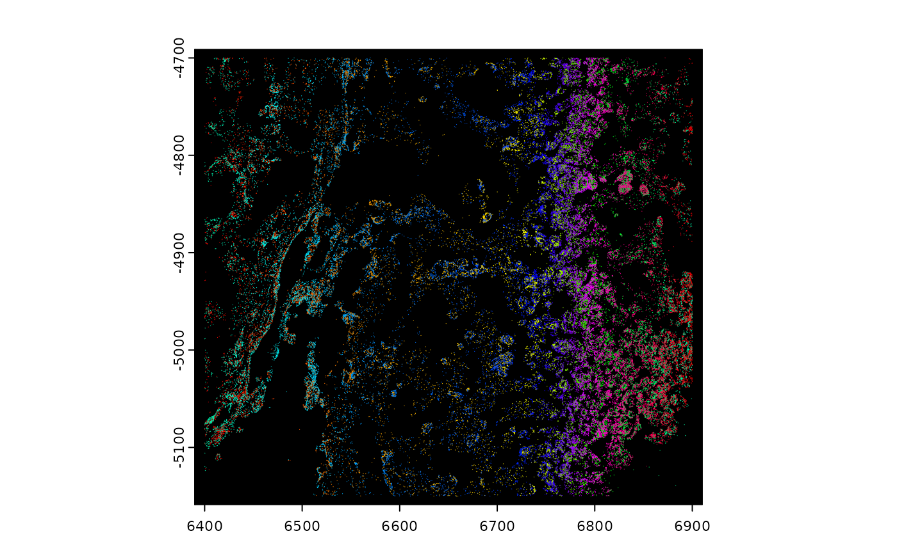
# plot specific feature(s)
plot(gpoints, feats = featIDs(gpoints)[seq_len(4)], raster = FALSE)
######### spatLocsObj plotting #########
sl <- GiottoData::loadSubObjectMini("spatLocsObj")
plot(sl)
# plot points density (by count)
plot(gpoints, dens = TRUE, raster_size = 300)
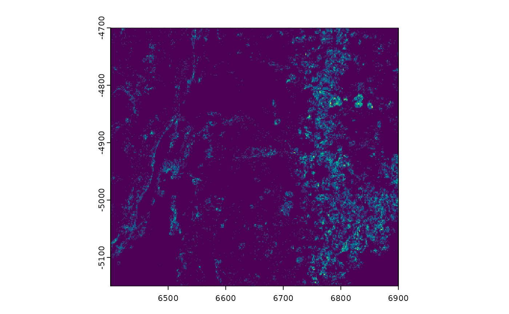
# force_size = TRUE to ignore default constraints on too big or too small
# (see details)
plot(gpoints, dens = TRUE, raster_size = 80, force_size = TRUE)
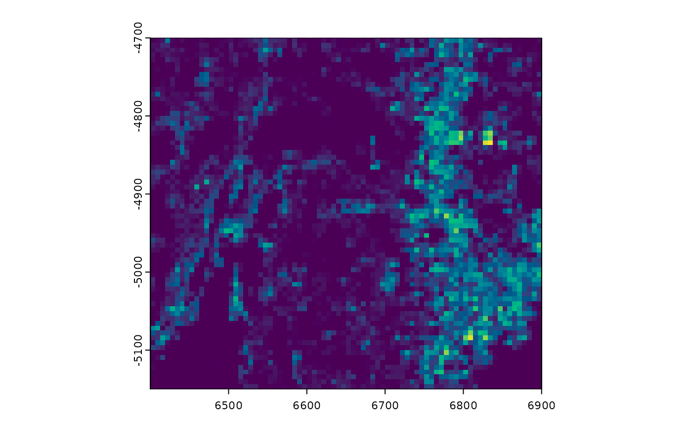
# plot specific feature(s)
plot(gpoints, feats = featIDs(gpoints)[seq_len(4)])
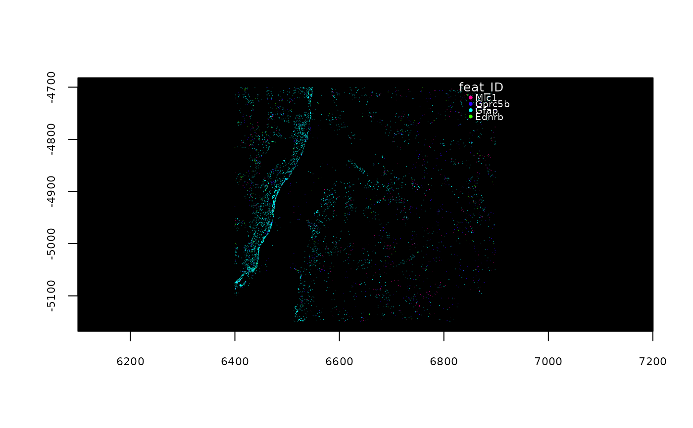
# ----- vector plotting ----- #
# non-rasterized plotting (slower, but higher quality)
plot(gpoints, raster = FALSE)
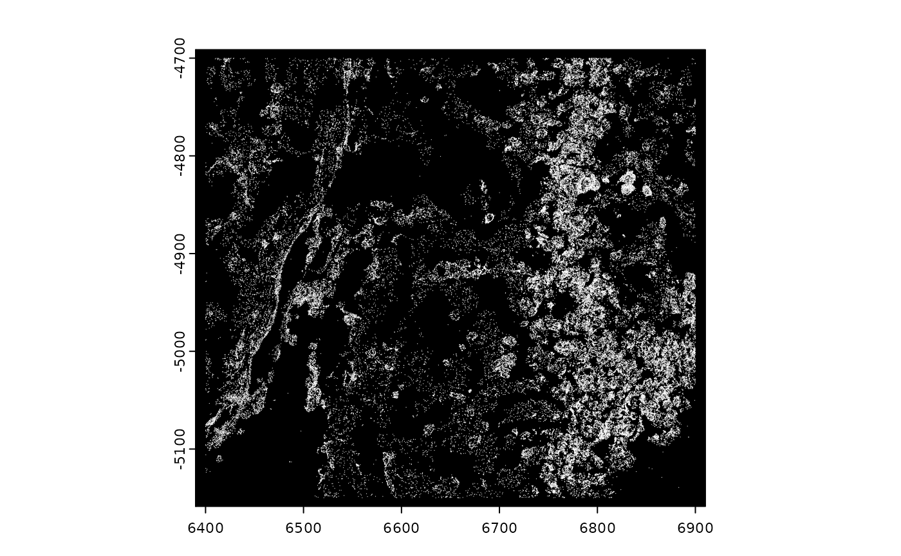
# vector plotting maps colors to transcripts
plot(gpoints, raster = FALSE, col = grDevices::rainbow(nrow(gpoints)))
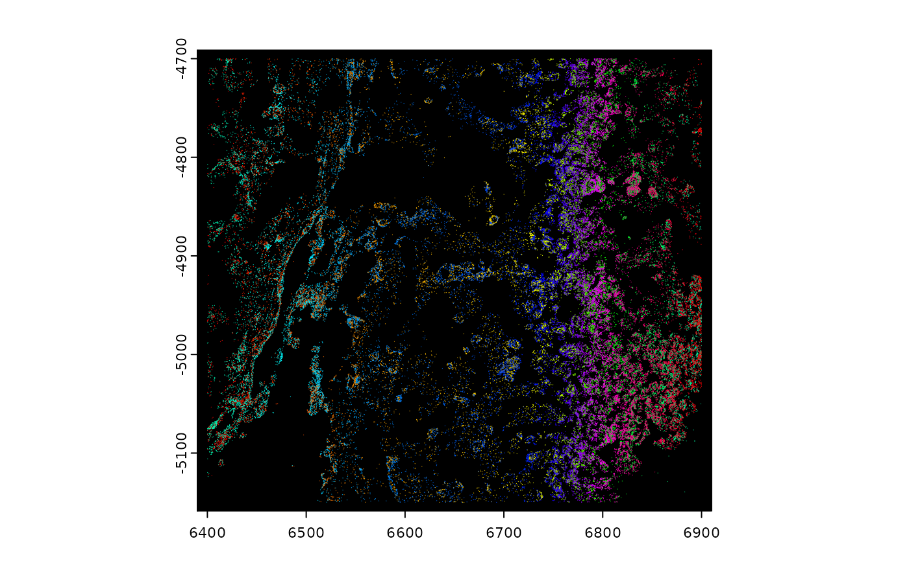
# plot specific feature(s)
plot(gpoints, feats = featIDs(gpoints)[seq_len(4)], raster = FALSE)
######### spatLocsObj plotting #########
sl <- GiottoData::loadSubObjectMini("spatLocsObj")
plot(sl)
 ######### dimObj plotting #########
d <- GiottoData::loadSubObjectMini("dimObj")
plot(d)
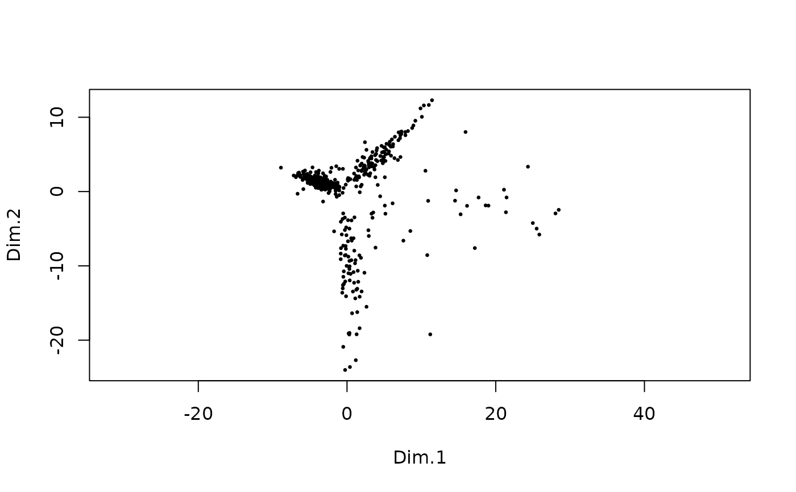
plot(d, dims = c(3, 5))
######### dimObj plotting #########
d <- GiottoData::loadSubObjectMini("dimObj")
plot(d)
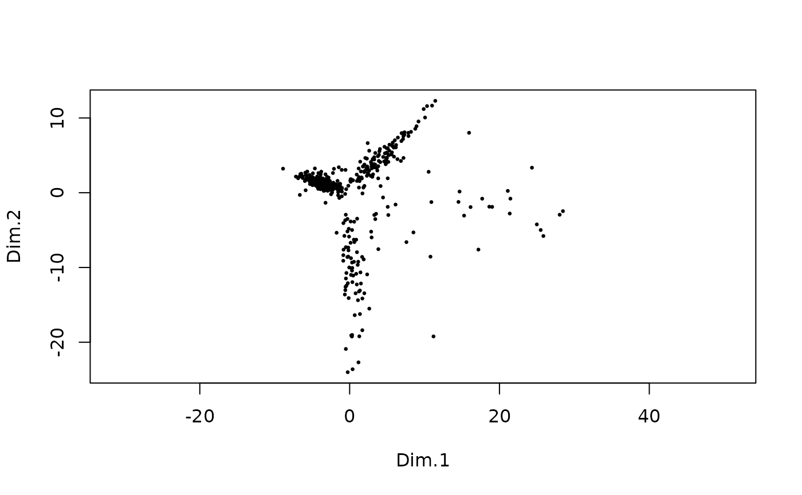
plot(d, dims = c(3, 5))